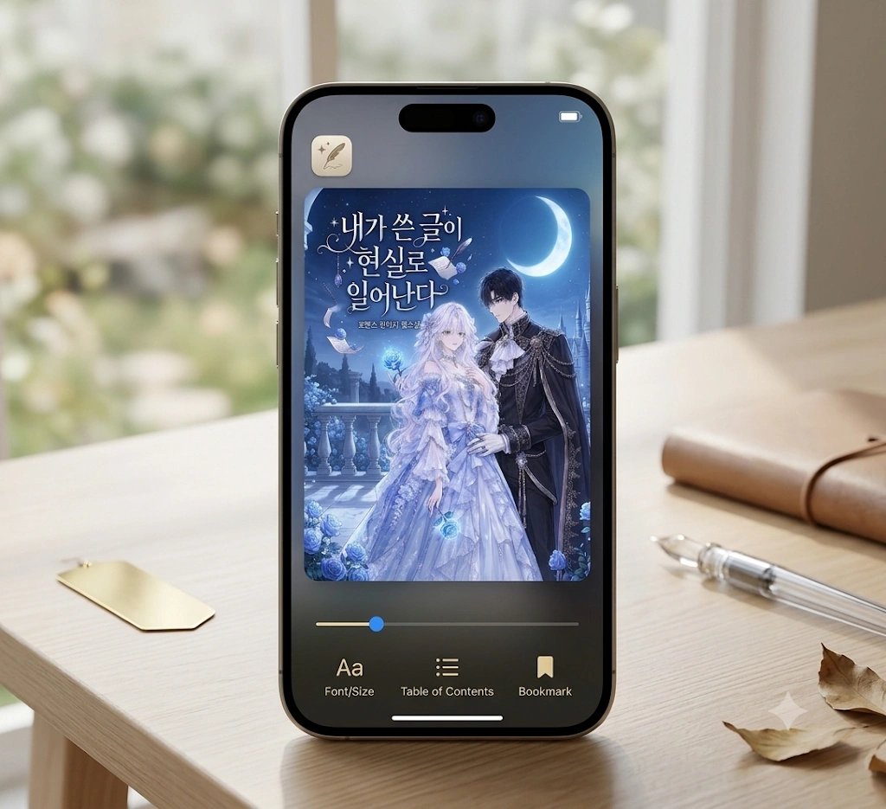

STORY PLANNING & CONTENTSPORTFOLIO / 2026
상상에서 시작해,
이야기로 닿다.
인물의 마음을 따라가고,
그들이 살아갈 세계를 만듭니다.

A STORY BYKIM DONG WOO
FEATURED STORY / 01로맨스 판타지 · 웹소설 기획내가 쓴 글이
내가 쓴 글이
현실로 일어난다
만약, 내가 써 내려간 이야기가
눈앞의 현실이 된다면?
CHARACTER · WORLD · NARRATIVE01 — 02
김동우 스토리 · 콘텐츠 포트폴리오SCROLL TO EXPLORE ↓
01 / SELECTED WORKS
Story project02
상상 속 세계부터 일상의 작은 변화까지
02 / PEOPLE IN THE STORY
Character archive07
이야기를 움직이는, 저마다의 마음
03 / ABOUT THE CREATOR
이야기 뒤의
김동우입니다.
“하나의 웹에서 모든 재미를”
웹소설, 웹툰, 애니메이션 속 다양한 이야기를 즐깁니다.
좋아하는 세계를 탐색하는 데서 출발해,
직접 인물과 이야기를 기획합니다.
EDUCATION
서일대학교 · 미디어출판학과
2022.03 입학
QUALIFICATION
그림책창작전문지도사 2급
2026.02.23 · 한국아동문화콘텐츠
MY INTERESTS